Год Героев России Белоярского городского округа
Белоярский округ - один из самых молодых округов Свердловской области. Он был образован в 1992 году. Но, несмотря на свою молодость, округ имеет богатую историю. Здесь жили и трудились многие замечательные люди, которые внесли большой вклад в развитие округа. Среди них - ветераны Великой Отечественной войны, труженики тыла, участники локальных конфликтов.
Но что за день такой "Год Героев России"? «Год Героев России» – уникальный проект, реализуемый организацией «Герои Урала» и муниципалитетами Уральского федерального округа. 25 января сразу в четырех территориях Белоярского городского округа состоится торжественное открытие уникального тематического года. В рамках него во всех территориях городского округа (а их более 40), пройдет комплекс гражданско-патриотических мероприятий с участием Героев Российской Федерации, Героев Советского Союза, героев СВО и других выдающихся людей.
25 января в 12:30 в 3-х отдаленных от райцентра поселках – Совхозном, Кочневском и Косулино – о старте «Года Героев» объявят Герои Российской Федерации Игорь Родобольский, Олег Касков, Дамир Юсупов и Герой Советского Союза Николай Кравченко.
25 января в 17:00 торжественная церемония открытия «Года Героев России» состоится в Белоярском районном Доме культуры. Значимость проекта для территории неоспорима. Доказательство тому и зрительный, зал, который вместил почти в половину больше зрителей, чем количество мест, и почетные гости - депутат Законодательного Собрания Свердловской области Вячеслав Вегнер, заместитель управляющего Южным управленческим округом Роман Валов, руководитель представительство российского общества "Знание" в УФО Иван Попп, руководители муниципалитетов, государственных и муниципальных учреждений, ветераны боевых действий, школьники и юнармейцы.
В рамках открытия «Года Героев», в Белоярском также пройдет заседание Координационного Совета по патриотическому воспитанию Южного управленческого округа Свердловской области.
Творческое сопровождение мероприятия обеспечит ансамбль Главного управления МВД России по Свердловской области «Сердце Урала».
Проект «Год Героя» реализуется в регионе уже 6 лет общественной организацией «Герои Урала» при поддержке Аппарата полномочного представителя Президента России в УрФО, Свердловского регионального отделения партии «Единая Россия», Законодательного Собрания Свердловской области, Регионального центра патриотического воспитания Свердловской области, всероссийского общества «Знание».
Мероприятия в рамках «Года Героев России» в разное время уже прошли в Ирбите, Верхотурье, Богдановиче, Карпинске и еще 10 городах области.
В 2024 году «Год Героев России» пройдет на 4-х территориях – в Белоярском, Красноуральском, Арамильском городских округах Свердловской области и в городе Губкинском Ямало-Ненецкого автономного округа.

Мероприятия в рамках такого года в разное время уже прошли в Ирбите, Верхотурье, Богдановиче, Карпинске и еще в 10 городах области.
До начала торжественного мероприятия почетные гости побывали в отдаленных от райцентра населенных пунктах.
Так, директор Регионального центра патриотического воспитания Герой Российской Федерации Игорь Олегович Родобольский в Кочневском сельском Доме культуры «Колос» встретился с юными жителями села Кочневское. Встреча прошла в рамках реализации регионального этапа Всероссийского проекта «Диалоги с Героями».
Было видно, что ребята готовились к встрече, внимательно изучали биографию и боевой путь Игоря Олеговича: один из участников мероприятия, Марк Пастухов вместе с отцом изготовил модель вертолета, которую и вручил Игорю Олеговичу.
Вопросы, которые задавали Игорю Олеговичу, были самыми разными. Они касались выбора жизненного пути и участия в боевых действиях, нравственных ориентиров и выработки волевых качеств, например, способности действовать в критической обстановке, учебы в школе и участия в общественной жизни.
- Чтобы стать настоящим патриотом Отечества, нужно не только любить его, но и уметь отстаивать его интересы, - подчеркнул в завершении встречи Игорь Олегович Родобольский.
- Участие в таком важном проекте - это честь для нас. Он позволит скоординировать работу всех субъектов патриотического воспитания округа. В каждую территорию района приедет Герой России, мы будем проводить уроки Героев, диалоги на равных, организуем тематические пространства, активизируем работу по сохранению исторической памяти и многое другое, - запланировано проведение почти 300 мероприятий патриотической направленности. Уверен, «Год Героев» сплотит всех белоярцев и даст новый виток в развитии территории. - отметил Глава Белоярского городского округа Григорий Вихарев.
В мероприятии приняли участие начальник Кочневской сельской управы Алла Миншагитовна Кошкарева и директор Кочневской средней общеобразовательной школы № 16 Людмила Ивановна Кожевникова.
Вместе со школьниками, педагогами и ветеранами Игорь Олегович Родобольский возложил цветы к мемориалу кочневцам, павшим в годы Великой Отечественной войны.
Пригласили Игоря Олеговича и в школу, где ребята рассказали не только об истории села, которая насчитывает уже четыре века (первое упоминание о нем относится к 1624 году), но и о своих земляках – участниках Великой Отечественной войны, боевых действий в Афганистане, на Северном Кавказе и специальной военной операции.
Митинг и возложение цветов к мемориалу павшим в годы Великой Отечественной войны и белоярцам – Героям Советского Союза прошел в этот день и в поселке Белоярском. В нем приняли участие почетные гости, ветераны боевых действий, школьники, юнармейцы, представители администрации Белоярского городского округ, руководители муниципалитетов, государственных и муниципальных учреждений.
На торжественной церемонии открытия «Года Героев России – 2024», которая проходила в Белоярском районном доме культуры, к почетным гостям и белоярцам обратились депутат Законодательного Собрания Свердловской области Вячеслав Михайлович Вегнер, заместитель Управляющего администрацией Южного управленческого округа Свердловской области Роман Юрьевич Валов и руководитель управления по развитию Уральского федерального округа Российского общества «Знание» Иван Александрович Попп.
В ходе церемонии председателем правления региональной социально-патриотической общественной организации Свердловской области «Герои Урала», Героем Российской Федерации Олегом Александровичем Касковым и Главой Белоярского городского округа Григорием Андреевичем Вихаревым было подписано соглашение о сотрудничестве и план совместных мероприятий, проводимых в рамках «Года Героев России – 2024».
Напомним, что в 2024 году «Год Героев России» пройдет на 4-х территориях – в Белоярском, Красноуральском, Арамильском городских округах Свердловской области и в городе Губкинском Ямало-Ненецкого автономного округа.
Общее число известных присвоений звания Героя Российской Федерации (по состоянию на 31 декабря 2023 года) составляет 1 411 человек, из них 599 — посмертно.


 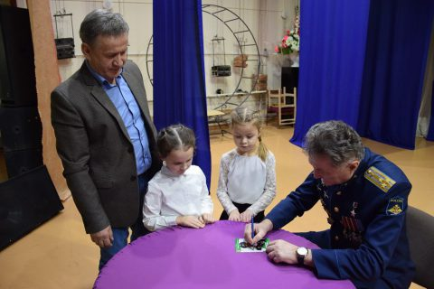
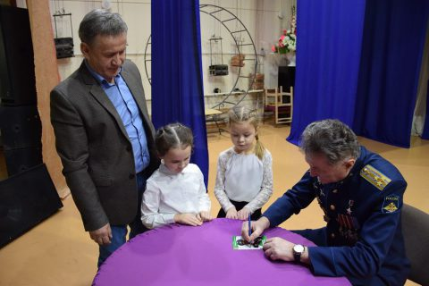
 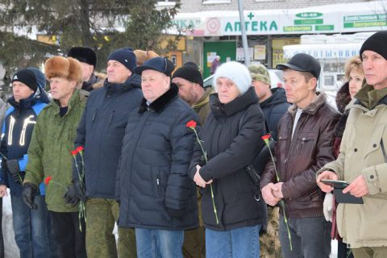
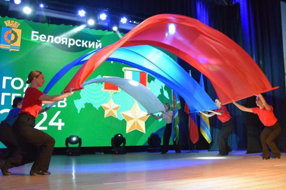
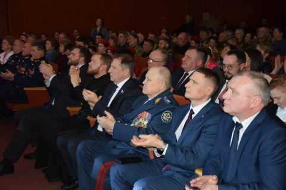
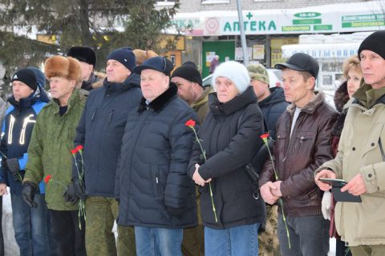
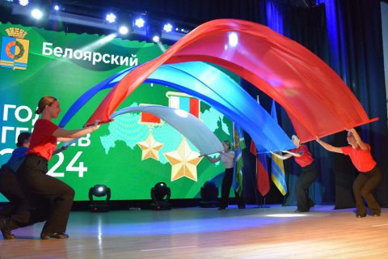
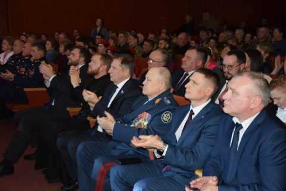
 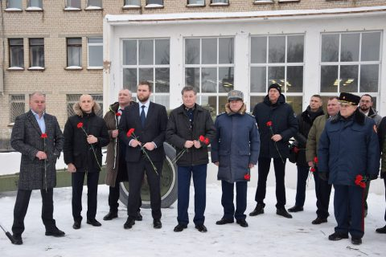
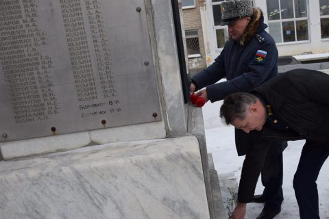
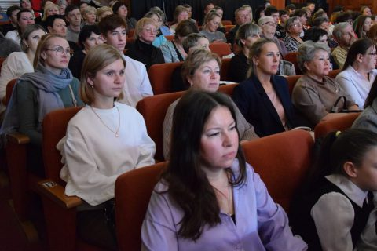
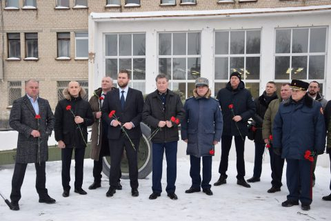
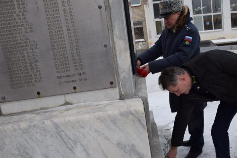
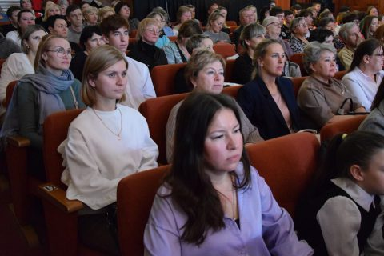
1 апреля 2024 года Белоярский городской округ посетил Герой России Максим Шоломов. Встречи состоялись в образовательных учреждениях: Большебрусянской средней школе № 7, Кочневской средней школе № 16. На встрече присутствовали учащиеся, педагогических состав, представители общественных организаций, руководители органов местного самоуправления, депутаты Думы Белоярского городского округа. Максим Владимирович Шоломов - военный офицер, будучи командиром взвода выполнил стоявшую перед его подразделением боевую задачу, нанеся значительные потери противнику и при этом сохранив личный состав, сам будучи тяжело раненым, спас боевого товарища из горящей БМП. В боях Максим Шоломов лишился обеих рук, однако продолжает служить в рядах Вооруженных Сил РФ. Год Героя России на нашей территории активно продолжает свое шествие.